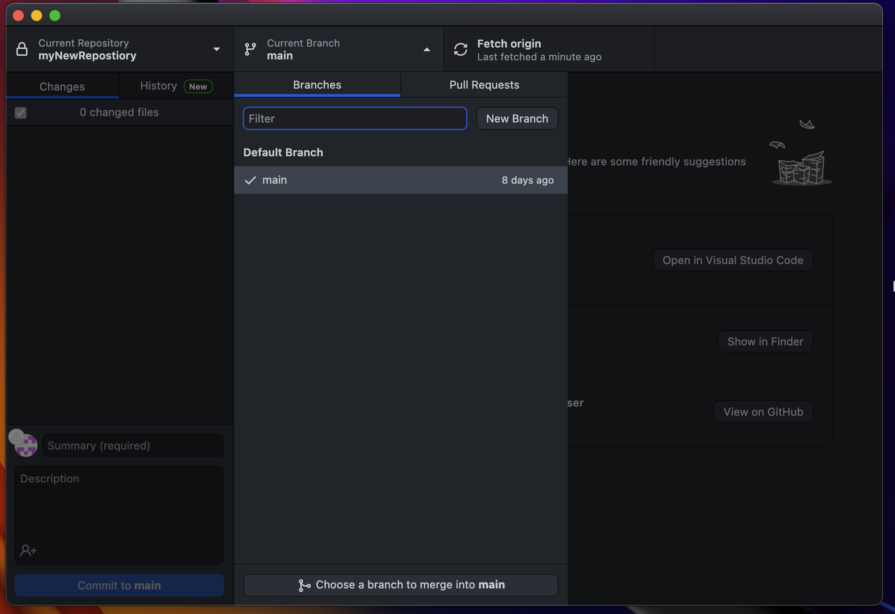
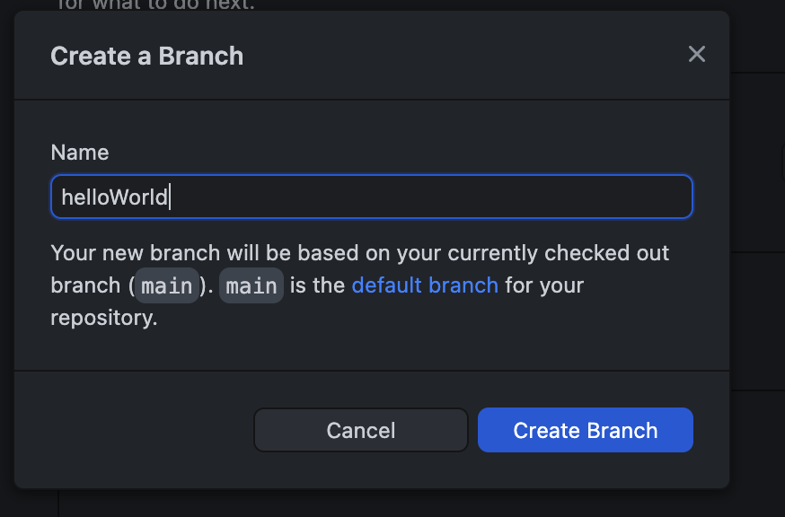
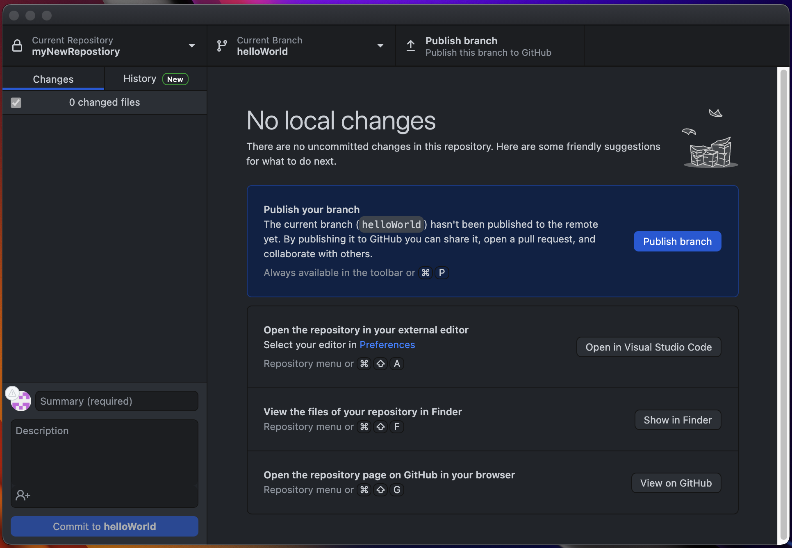
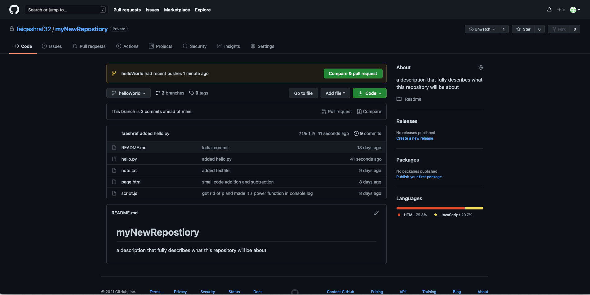
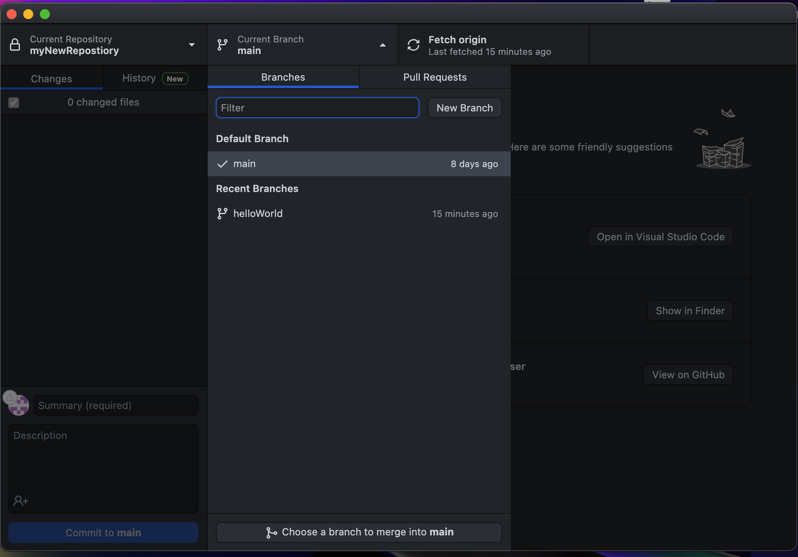
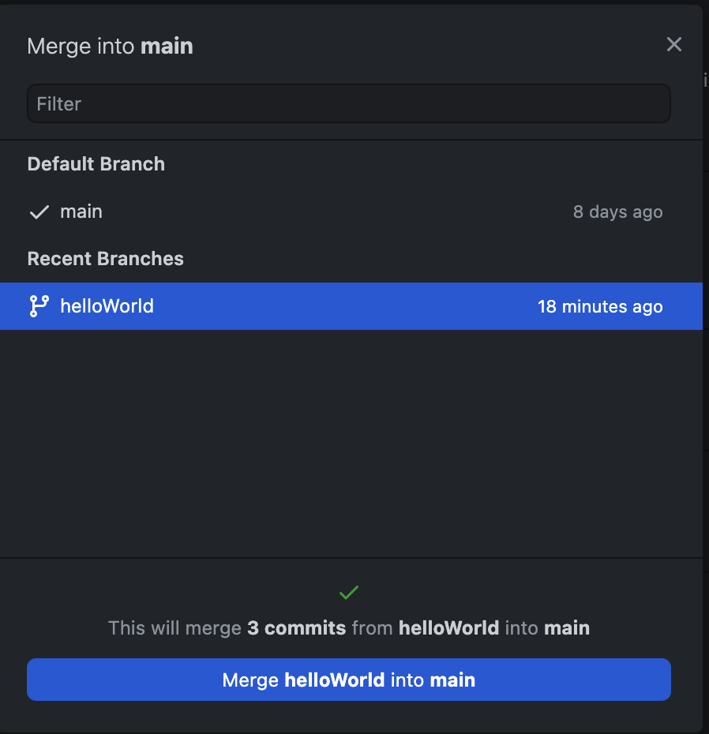

Lesson 4-3
How do I Branch on a Repository?
Like I said earlier, we need to do 3 things in order to Branch.
- Create a Branch to work out of (you can also do this on GitHub.com)
- Add code to that branch
- Commit/Push the Branch
For these instructions, I will show you how to do all 3 steps in each sub-section.
GitHub Desktop
Creating a Branch
- Open GitHub Desktop and open the repository that you want to branch in.
- On the top ribbon under "Current Branch", click the button in that area.
- Click "New Branch".(see Figure 4A)  Figure 4A: This window shows all of the Branches you have, as well as it gives you the option to make a new one, and filter the ones you already have.
- Enter a name for your new Branch and then click "Create Branch".(see Figure 4B)  Figure 4B: This is what the new branch window will look like.
- On the main screen, click "Publish Branch". This will push the new branch to your repository on GitHub.com.(see Figure 4C)  Figure 4C: This is what you shall see once you have created a branch.
To switch between branches, follow step 2, but instead, select the branch you want to work out of.
This process is called git checkout and works similar to checking out a book from a library. You are taking all of the files from a specified branch and working inside of them at a different location in your repository, like how you take a book home from the library to read and then eventually return.
Note that it will say for you to do a pull request after the last step, but that is optional. It allows you to compare two branches (the one you created and an already existing one).You can, as will I, ignore this.
Now go ahead and do any coding you want. In my case, I added a file called hello.py that prints "helloWorld" in the console.
Committing/Pushing with a Branch
There really isn't much to say here. Just like you would commit/push on the main branch from 3-3, you would follow the same steps but instead you are committing to your new branch.
After committing/pushing this is how the main branch looks:
...and this is how our helloWorld branch looks:
 Figure 4E: Notice that "hello.py" is here. That is the magic of branching (not Macy's).Now that we have added some code, let's merge our branch back into main. You would normally do this once you are ready to merge new changes from the front-facing part of your app with the new backend code.
Merging 2 Branches
- Open the branch you want to merge into in repository. (In most cases, you want to merge a separate branch into your main branch.)
- On the top ribbon under "Current Branch", click the button in that area.
- You should see all of your branches, including the main one. Click "Choose a branch to merge into main".(see Figure 4F)  Figure 4F: You will be presented with all of the branches in the repository.
- On the Pop up window, select the branch you want to merge and click "Merge \branchName\ into main".(see Figure 4G)  Figure 4G: Select the branch to merge and click the button at the bottom.
- Push your new changes.
That is all that there is to doing branching on GitHub Desktop. Now let's explorer how to do it in Terminal.
So there you have it. Branching isn't all that bad. Hopefully you better understand the way Branching works. I sure do. Let's recap what we learned on the next page.